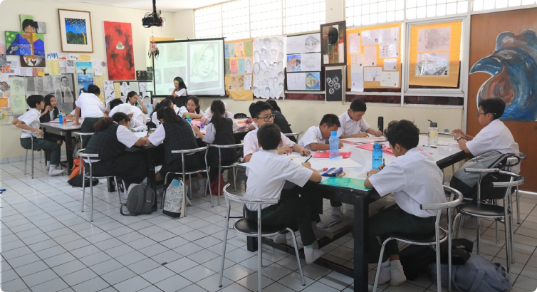

Visi
Menjadi pusat pendidikan yang menumbuh-kembangkan intelektual Islam berwawasan luas.

Siswa usia SMP adalah usia perubahan dari anak-anak menuju remaja, ditandai dengan pubertas yang dialami mereka. Disini sangat dibutuhkan pendidikan yang bisa membimbing mereka dalam mengembangkan potensi secara fisik, intelektual, sosio-emosional, dan spiritual.
SMP adalah jenjang pendidikan lanjutan dari Sekolah Dasar, dimana jenjang pendidikan ini adalah jembatan penghubung menuju jenjang Sekolah Menengah Atas. setelah di SD ditekankan untuk belajar mandiri dan beradaptasi dengan tugas-tugas individual, di SMP akan lebih ditekankan untuk pembelajaran yang bersifat klasikal dan kolaboratif (Kerja Sama). juga diterapkannya sistem pembelajaran terintegrasi dan lintas mata pelajaran yang nantinya diharapkan dapat menghasilkan pelajar yang memiliki etos belajar, disiplin dan juga dapat menyesuaikan diri dalam keberagaman.

SMP Islam Al Izhar Pondok Labu bertujuan untuk menumbuhkan pribadi-pribadi yang unggul dan mengembangkan potensi fisik, intelektual, spiritual dan sosio-emosional siswa, dan pengenalan berbagai profesi. Kami memberikan bimbingan pengalaman dan keterampilan belajar yang interaktif, penerapan cara berpikir yang logis, analitis dan variatif di semua bidang.
Kepala Sekolah
Wakil Kepala Sekolah
Wakil Kepala Sekolah Bidang Kesiswaan
Wakil Kepala Sekolah Bidang Administrasi & Sarana Prasarana
Menjadi pusat pendidikan yang menumbuh-kembangkan intelektual Islam berwawasan luas.
Mengembangkan konsep dasar literasi, study skills, pola pikir kreatif ilmiah, dan pendidikan karakter sesuai dengan usia sekolah dasar.
SMP Islam Al Izhar Pondok Labu menggunakan Kurikulum Nasional Indonesia sebagai acian pembelajaran dan menggunakan Bahasa Indonesia sebagai bahasa pengantar. Mata pelajaran meliputi :

1. Pendidikan Agama,
2. Pendidikan Kewarganegaraan,
3. Bahasa Indonesia,
4. Bahasa Inggris,
5. Matematika,
6. IPA,
7. IPS,
8. Kesenian (Seni Musik dan Seni Rupa),
9. Keterampilan (Tata Boga dan Elektronika),
10. Pendikan Jasmandi dan Kesehatan,
11. Pendidikan Lingkungan Kehidupan Jakarta,
12. Pendidikan Teknologi Informasi dan Komputer.
yang disesuaikan dengan visi, misi, dan strategi Perguruan Al-Izhar.